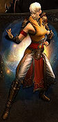

Diablo III, while featured completely in 3D with a 3D environment, will follow closely in Diablo II's track by using the classic isometric view, fast gameplay, and randomized content for high replayability. Some changes have been made in order to make the game faster and more flexible as well as make players choose and employ tactics rather than mindless mouseclicking. Besides taking well-learned lessons from WoW, the developers have been inspired by games such as Zelda and God of War. Regardless, the game will be possible to play with a mouse alone, if a player so wishes (but you would be a lot less efficient).
Blizzard has confirmed that the game will ship with five characters. These are the Barbarian, Demon Hunter, Monk, Witch Doctor, and Wizard. All five classes will be playable in male or female versions. The gender difference is purely cosmetic; male and female characters have identical stats and abilities. The classes are very distinct from one another, for all armor appears different depending on which character is using it, the characters have completely unique skills, and each has their own resource type.
Though all five classes for Diablo III have been revealed, more are expected in the expansions.
| Barbarian | |
|---|---|
| The Barbarian - The same character you played in Diablo II, but with some new skills, and backed with the power of the ancients. | |
| Demon Hunter | |
| The Demon Hunter - The last class revealed is a ranged weapon specialist with a grudge against all demon kind, sexy style, deadly traps, and demonic gadgets to go with her glowing eyes. | |
| Monk | |
| The Monk - A new fellow from Ivgorod. Combining martial arts of our Eastern cultures with a holy strike from the Western disciplines, he takes names and kicks in faces. | |
|  | |
| Witch Doctor | |
| The Witch Doctor - A new class that comes from the jungle region of Teganze, and uses voodoo magic to do his bidding. One of his highlights is the Wall of Zombies spell. | |
| Wizard | |
| The Wizard - A new class that is a pure spell caster harnessing arcane and elemental magic to do her bidding. Very similar to the Sorcerer and Sorceress of previous Diablo games. One of the highlights is the Slow Time spell which warps space and time, slowing nearby monsters and projectiles. | |
One major change announced early in Diablo III's development was the elimination of player-assigned stat points. In Diablo III, each class gains various attribute points in attack, precision, vitality, defense, and willpower when they level up, and these are automatically assigned. The Diablo III developers felt the stat allocation in Diablo II was a poor way to provide character customization since players almost always followed an established build, which was always the best choice for a character. This removed any variety or individuality.
Stats can be modified in Diablo III in various ways: via charms in the talisman, and with equipment bonuses, including socketing gems.
Attack governs how much damage a character does in all attacks, physical and magical.
Each point of Attack gives:
Precision governs the chance that a character will make a critical hit in all attacks, physical and magical.
Each point of Precision gives:
Defense governs the amount of damage a character takes from all attacks, physical and magical.
Each point of Defense gives:
Vitality governs the amount of life a character has.
Each point of Vitality gives:
While gems return for item sockets, runes in Diablo III are not used in items. There are five types of runes, crimson, alabaster, indigo, golden, and obsidian, which are socketed into active skills, where they modify the skill in various beneficial ways.
Runestones are a huge aspect of the game, always improving skills to the point that virtually any socketed runestone, even of the lowest level, will make an immediate and obvious difference in a skill's efficacy. Only a few skill rune functions are known at this point, and all are subject to change as development continues.
The first known complete skill permutation was the Wizard's Hydra skill. The basic skill is much as it was in Diablo II, a three-headed flame dragon that pokes out of a manhole in the ground, spitting firebolts at enemies. Each rune changes this effect quite noticeably. The effects revealed for Hydra changed considerably even between August and October 2010, when the slide to the right was presented at Blizzcon 2010:
Death is less of an obstacle to success in Diablo III than in previous games in the series. Dead players in Diablo III do not lose equipment or gold. They must wait a mere few seconds before waiting to be resurrected by another player in their party or restarting at the last checkpoint (not waypoint) they passed over.
Hardcore mode is an option in the game, and as in Diablo II, dead HC characters stay dead forever.
Death will even look better. There are many more monster death animations, critical hit deaths come with bonus gore, and even players get to enjoy the death variety, since some of the special monsters have special fatality animations they'll use if they kill a player during a battle.
There are going to be three difficulty levels in Diablo III, as in other games in the series. The normal difficulty level will not be very difficult, and characters are expected to rise to about Clvl 30 working their way through it, then 50 after Nightmare, and 60 (max level) after Hell. There will not be grinding required to reach the max level in Diablo III; as in World of Warcraft, it will be achieved simply by working through the normal content.
The difficulty will increase substantially on Nightmare, and the developers have talked about Hell as a much greater challenge, though they are committed to allowing solo players to defeat everything in the game. Nothing will be so hard that a group is required to pass it, and there are no plans to include raid-style content.
Inferno is the newest difficulty level in Diablo III.
Inferno is aimed towards max-level characters (level 60) and may even have it as a requisite to enter the difficulty to begin with. What is known about inferno:
The focus of the end game will be much-changed in Diablo III. The developers have not revealed many details, but they say it will be much more compelling than simply running the same bosses over and over again. That characters will be at or nearly to the max level by the time they finish Hell difficulty (barring rushing or other activities to take a character well outside the normal level progression) makes a big difference, since gaining experience will not be part of the end game.
There are talks about Achievements being incorporated, or special online-only challenges. The team regards the item-hunting game as the ultimate goal of a character in Diablo III.
Another end-game activity is PvP play in the Arena, as characters could respec and switch around their equipment to build a character entirely focused on PvP play.
Armor is arranged in gear sets in Diablo III. There are 18 of them, increasing in quality/appearance from simple cloth to ornate plate mail. The items do not repeat with different names/stats; there are no exceptional/elite versions of items in Diablo III. This means there is a wider variety of total item types, and that players will see a steady progression throughout the game of increasingly dramatic-looking armor.
Weapons are the same, and will increase from plain to fancy, with stats to match.
Most items are rare or magical, as before. Sockets are not a special feature of white items; sockets may occur on any type of item, and there will not be plain socketed items, nor would you want one since there are no Runewords to put into them. Uniques return, though they are apparently going to be called "Legendary" in Diablo III. Item sets are also likely returning, though they may differ in function somewhat, to make them more useful and/or easier to assemble.
A very popular type of item will be crafted items, magical or rare items made by the NPC Artisans from various recipes.
As in previous games in the series, NPCs will feature importantly in Diablo III. Much of the game story will be given by the NPCs, and they will be more interactive, while their speeches will be shorter, more to the point, and can be listened to while playing; you are no longer forced to "stay awhile" while you "listen."
Followers: More NPCs are found out in the dungeons than in past games, and mini-quests such as Escort Missions are common throughout the game.
Mercenaries: The developers have talked about wanting to make mercs better and more useful than they were in Diablo II, but nothing has yet been revealed.
Artisans: "Vendors 2.0," these NPCs are merchants, quest-givers, and information sources. They follow the player throughout the game, traveling in a caravan between the acts, and in addition to the standard item buying and selling, they can craft new semi-random items from special recipes, as well as enchant, socket, and repair items. Artisans can even be trained up to higher levels, giving them better skills.
As in Diablo II, travel is on foot. There are no mounts in Sanctuary. Nor are there any Town Portals, in a major change from earlier games in the series. The developers felt that Town Portals made it too easy for players to escape danger and made it impossible to offer compelling, dangerous combat.
To replace town portals, there are more waypoints, frequent checkpoints, and a new item, the Scroll of Wealth that allows players to sell their items remotely, without returning to to town. The new salvage cube, an essential element of crafting, is another addition meant to obviate the need for regular town returns.
The story line of the game takes place twenty years after a few powerful heroes saved Sanctuary from the demonic onslaught in Diablo II. Those events took place out of the sight of the common populace, and have become myth or legend over the intervening years. Most of the principles are dead or insane, and no one has had any sight of the Archangel Tyrael since he destroyed the Worldstone, triggering an explosion that erased Mount Arreat and shattered the Barbarians' civilization.
Since the destruction of the Worldstone, those few humans (such as Deckard Cain) who did know of the danger to the world have been expecting an imminent demonic invasion, without the Worldstone to keep them in the Burning Hells. This has not happened because, and players will eventually learn, the two remaining lords of Hell (presumably Belial and Asmodean) have been building armies for a full-on invasion, intended to utterly destroy humanity.
Players will see small-scale demonic events, as in previous games, but the developers have promised that the scale of some aspects of the game, such as the siege on Bastion's Keep, will be amazingly large; far bigger than anything ever previously seen in the series.
The main focus of Diablo III is co-op PvE style play. Up to four players (yes, just four) will join up in a game and play together, and players in the same game are now always friendly and in the same party. There is no non-consensual PvP in Diablo III, and no way to "go hostile" in a normal PvE game.
Game creation and group formation should be easier in Diablo III. Though the details have not been revealed, the developers hope it will be very easy to join up and play. Their hope is that players in one game can simply click an option to start another one, and as everyone accepts it, they'll immediately appear in a new game and continue playing, almost seamlessly.
All multiplayer Diablo III gaming will take place over Battle.net. Diablo III is following in Starcraft's footsteps and will not include LAN support. Though Blizzard never explicitly terms it as such, this is primarily a security measure; requiring players to buy a retail copy and have a valid Battle.net account and CD-Key to play multiplayer is their way of fighting piracy.
The outlet for PvP in Diablo III is the Arena, a special game type that exists only for head-to-head combat. Players can join up and fight their friends in 1v1 or 2v2 games, but the main design is for players to take part in 3v3 battles, either in teams or as singles who will be sorted together via the game's matchmaking system.
Arena play debuted at Blizzcon 2010 and was wildly popular, even with just 3 pre-made characters available to choose from, and limited skills all pre-set.
Hardcore Arena will be supported, and the initial plans of the team is for it to be regular Hardcore rules: you die, you stay dead. This approach has many critics, who ask for some sort of non-lethal HC version, and point out that virtually no one plays PvP in D2 Hardcore since the penalty for death is so severe, both in emotional pain and in the play hours required to build up another character to PvP level. It also seems like any sort of team play would be impossible, since even if a team won, one or two of the players on it would lose their character.
Blizzard has promised very big changes in Battle.net 2.0, and besides removing the LAN functionality, the idea is to encourage people to play online with Achievements, handy friends/foes lists, and community support.